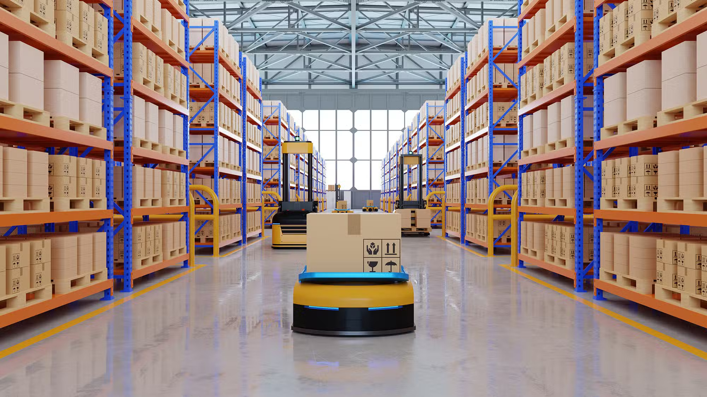

3PL & Integrated Logistics
Solutions built around your operational requirements.
Explore capabilityBigfoot Group of Companies
Beyond logistics. Enabling supply chains that perform, adapt and grow.
For more than three decades, Bigfoot has supported businesses through dependable logistics execution, operational expertise and trusted partnerships.
Image preview. Approved historic and current Bigfoot photographs are still needed.
01 / Three decades of trust
30+ years of logistics experience
Experience shapes the way we work.
Trust shapes the way we grow.
Bigfoot has grown alongside the customers and industries we serve, expanding capabilities while remaining grounded in consistent delivery, long-standing relationships and a commitment to doing the job right.
Our story02 / Integrated capabilities
Five capabilities, working together around your business. From everyday execution to the wider operational picture.
Select a stage to explore the connected capabilities.
Solutions built around your operational requirements.
Explore capabilityDependable movement supported by experienced people and transport capability.
Explore capabilityStorage, fulfilment and operational infrastructure.
Explore capabilityTemperature-controlled solutions designed to protect product integrity.
Explore capabilityCustomised solutions connecting logistics, infrastructure, people and technology.
Explore capabilityAn illustrative journey. The steps and capabilities depend on your cargo and requirements.
Solutions built around your operational requirements.
Explore capabilityDependable movement supported by experienced people and transport capability.
Explore capability
03Storage, fulfilment and operational infrastructure.
Explore capabilityTemperature-controlled solutions designed to protect product integrity.
Explore capabilityCustomised solutions connecting logistics, infrastructure, people and technology.
Explore capability03 / Supply Chain Enablers
Four commitments guide the way we support our customers and their supply chains.
Dependable execution built through operational discipline, experience and accountability.
Connecting operations, information and technology to enable better decisions.
Building the capability and flexibility required to respond when conditions change.
Providing scalable logistics solutions that support our customers’ ambitions.
04 / Operational excellence
People. Safety. Discipline. Results.
Behind every successful operation are people planning, coordinating, communicating and taking responsibility for the details. Operational excellence is about completing the job safely, consistently and with integrity.
Our approach05 / Technology & innovation
Use technology where it creates meaningful operational value.
The people doing the work understand the practical needs of the operation.
Clear processes, communication and coordination support dependable execution.
Useful visibility helps people make informed decisions and respond to changing requirements.
Technology supports the operation. People give it purpose.
Explore our approach06 / Sustainability
Progress through considered choices, practical improvements and a long-term view.
Progressively evaluate lower-emission and electric vehicle opportunities.
Improve utilisation, routing, energy use and fleet performance where practical.
Balance environmental progress with safe, reliable and commercially sustainable operations.
07 / Strategic partnerships
Trust. Transparency.
Shared ambition.
We believe in relationships that create lasting value—bringing operational capability and a long-term perspective to the table.
Partner with Bigfoot08 / The strength of our group
Complementary businesses and expertise, united by a shared commitment to service.
Schematic group locations. This is not a shipping-route or service-coverage map.
Our group / Singapore
Our group / Malaysia
Our group / Australia
Our group / India
09 / From Bigfoot
Perspectives on the principles, people and partnerships behind supply chains.
Brand perspective
Reliability, visibility, resilience and growth connect everyday execution to the wider goals of a business. An enabler brings people, infrastructure and information together around those goals.
Operations perspective
Reliability is built through planning, coordination and clear accountability. People, safety and operational discipline help turn a commitment into consistent action.
Partnership perspective
Strong relationships are part of a strong supply chain. Trust, transparency and shared ambition create a foundation for solving practical requirements and developing together over time.
10 / Our people
Every movement starts with people.
Infrastructure and technology matter, but dependable logistics ultimately depends on people who take responsibility, solve problems and deliver consistently.
Skills, teamwork and professionalism shape the way we work.
People & careersOur next chapter
For more than three decades, customers have trusted Bigfoot to support the supply chains behind their businesses. Through our people, capabilities, technology and partnerships, we remain committed to enabling supply chains that are reliable, visible, resilient and ready for growth.
Let’s build what’s next